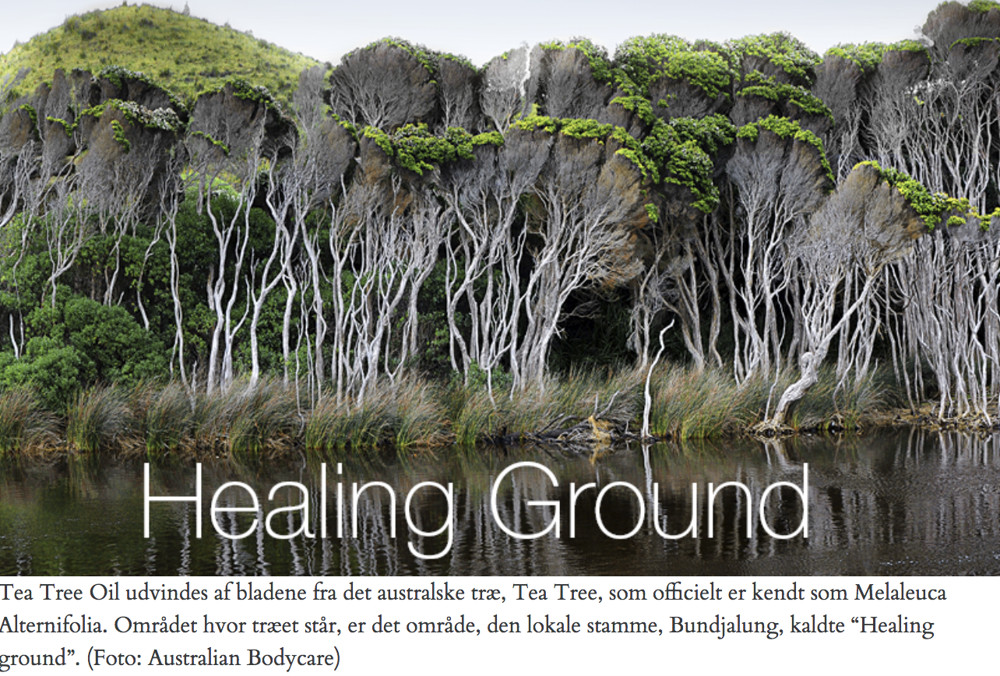
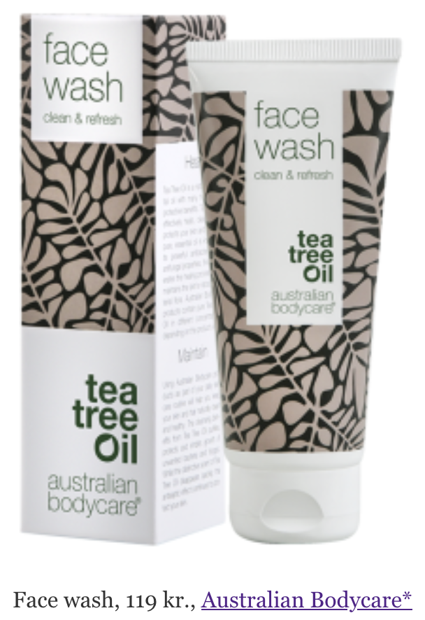

Forside Skønhed Sådan slipper du af med uren hud
Vi kender det allesammen. Huden overrasker gang på gang med nye urenheder og bumser, og altid gerne på den dag, du har en date eller anden aftale, hvor en bums virkelig ødelægger det hele. Det kan være svært at komme urenheder til livs, det kræver rens, eksfoliering og pleje. Australian Bodycare har ansigtsprodukter, som indeholder Tea Tree Oil, og det er en olie, som er bakteriedræbende og virkelig effektiv i kampen mod uren hud.
I kampen mod urenhud er det vigtigt at rense ansigtet hver dag, så du får fjernet noget af det snavs, som sætter sig i dine porer, og giver dig uren hud. Det er derfor også vigtigt, at produktet er mild mod din hud, da du bruger det ofte. Ansigtsvasken, der renser, fra Australien Bodycare indeholder effektive ingredienser blandt andet det populære Tea Tree Oil. Det anbefales, at du renser dit ansigt både morgen og aften.
Når du har renset dit ansigt, skal du rense endnu mere i dybden. Denne skintonic er uden alkohol, hvilket sikrer, at du ikke udtørrer din hud. Denne skintonic fjerner både snavs og overskydende fedt fra dine porer og renser din hud i dybden. Det anbefales at bruge skintonic, efter hver ansigtsvask, da det kan være med til at forebygge uren hud.